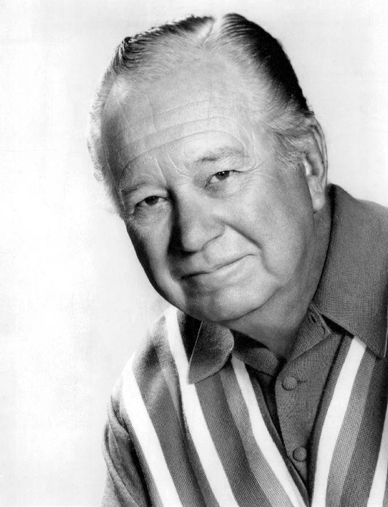

Calamitous Cachet Poster |
|---|
CIST2531 - Web Graphics II (Advanced Adobe |
Manor House Photo |
Moon |
Businessmen Silhouette |
Waterfall |
Edgar Buchanan |
Chris Pine |
Natalie Portman |
 Elizabeth Olsen |
Billing |